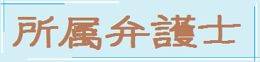
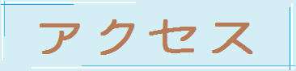
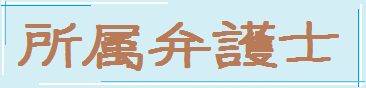
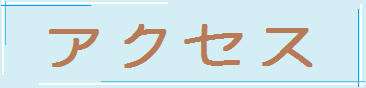
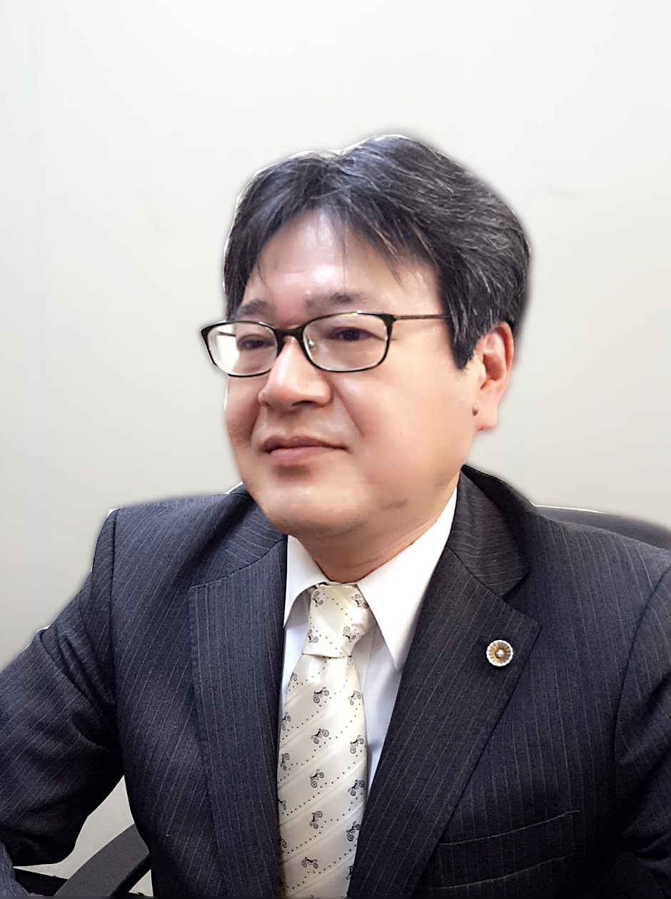

|
〒105-0004 東京都港区新橋2丁目21番1号 新橋駅前ビル2号館 7階 |
 




|
当事務所は、企業法務から、民事事件、家事事件、刑事事件まで扱う、いわゆる一般民事の法律事務所です。 我々は、気さくで話しやすく、なんでも相談できる弁護士であることをモットーにしています。 一部の依頼者から「弁護士らしくない」などといわれることもありますが、その分気軽に分野にこだわらずご相談いただける弁護士であると自負しております。 特異な専門分野にわたる事件の場合には、提携の弁護士と協同で対処します。 最近の傾向としては、不動産に関する問題、相続に関する問題、離婚に関する問題が多く、皆様の悩みの解決、紛争解決、紛争防止の手助けができればと思っております。 お一人で悩ます、お気軽にご相談ください。 |

弁護士 小関 勇二 |
||
|
小 関 健 二（こせき けんじ） 愛媛県宇和島市出身 名古屋工業大学工学部機械科卒業 中央大学法学部法律学科卒業 東京地方裁判所民事第８部（商事部）主任書記官 東京地方裁判所調停員 東洋大学法学部教授 平成４年弁護士登録 小関法律事務所開設 北陸大学法学部教授 |
|||
|
小 関 勇 二（こせき ゆうじ） 千葉県柏市出身 東京都立九段高等学校卒業 中央大学法学部法律学科卒業 平成６年弁護士登録（司法修習４６期） 足立武士法律事務所 足立・小関法律事務所 小関法律事務所 |
|||
〒105-0004 東京都港区新橋2丁目21番1号
新橋駅前ビル2号館 7階
(C) 2017 小関法律事務所